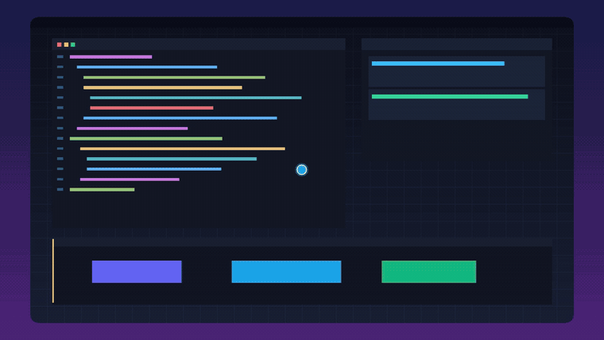
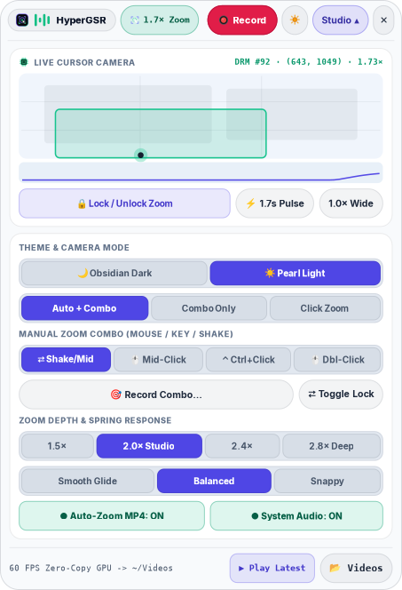

Screen Studio for Linux Wayland
in 56 MB of Native Rust.
Zero-copy GPU screen recording with rootless DRM Hardware Cursor Plane #92 tracking, 240Hz critically-damped spring auto-zoom, self-registering custom gesture combos, and a floating Wayland Layer-Shell Dynamic Island UI.
git clone https://github.com/KunalSiyag/gpu-recorder-rs.git && cd gpu-recorder-rs && ./install.sh
🎮 Try the 240Hz Critically-Damped Spring Camera Live
Move your cursor inside the viewport below, Click to trigger Auto-Zoom, or Scroll Wheel to lock manual zoom depth (1.0× – 3.0×).
pub fn poll_drm_cursor_plane(fd: RawFd, plane_id: u32) -> CursorSample {
// Reads CRTC_X, CRTC_Y, FB_ID across all native Wayland windows @ 60Hz
}
// src/zoom_engine.rs — Critically-Damped 2D Spring ODE (ζ = 1.0)
accel = -k * (pos - target) - 2.0 * k.sqrt() * vel;
/dev/dri/card* universal cursor plane properties (CRTC_X, CRTC_Y, FB_ID) without sudo or XWayland freezes.Ctrl+Alt, Super+Z, or Scroll Wheel in 1 click.🎬 Live Auto-Zoom & Dynamic Island UI
Docks natively at the top center of COSMIC, Hyprland, GNOME, Sway, and KDE Wayland desktops with 1-click Obsidian Dark and Pearl Light themes.


🌙 Obsidian Dark Studio
16:9 Live Cursor Radar, Spring S-Curve Telemetry & Custom Combo Binder

☀️ Pearl Frosted Light Studio
Daylight-ready high-contrast frosted glass theme with 1-click live switching
📊 How HyperGSR Compares
Built from the ground up after reverse-engineering Linux GPU screen recording pipelines.
| Capability | gpu-screen-recorder | OBS Studio | Screen Studio (macOS) | ⚡ HyperGSR (Rust) |
|---|---|---|---|---|
| Linux Wayland & X11 Support | ✅ Yes | ✅ Yes | ❌ macOS Only | ✅ Standalone Native + Flatpak Bridge |
| Rootless Wayland Global Cursor Tracking | ❌ X11 XFixes Only | ⚠️ Compositor-specific | ❌ macOS Only | ✅ DRM Hardware Cursor Plane #92 |
| Automatic Spring-Physics Zoom-Ins | ❌ None | ❌ Manual Lua scripts | ✅ Yes | ✅ 240Hz C² Spring + Bounded Planner |
| Self-Registering Custom Zoom Combos | ❌ None | ❌ Basic hotkeys | ⚠️ Limited | ✅ Shake, Clicks, Keys, Mouse4/5, Wheel |
| Wayland Layer-Shell Dynamic Island UI | ❌ Legacy Window | ❌ Full Window | ❌ macOS Menu Bar | ✅ zwlr_layer_shell_v1 + Dark/Light |
| Idle RAM & CPU Footprint | ~45 MB | ~340 MB | ~650 MB (Electron) | ~56 MB RSS / <1.5% CPU |